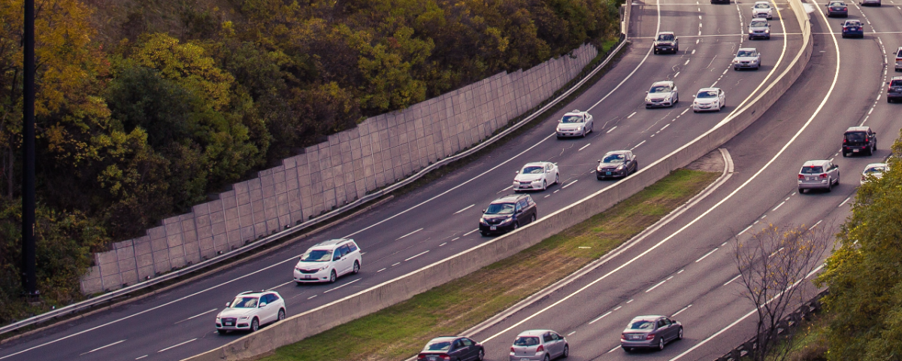

Guia de Mobilidade em Portugal

O Mobilidade Portugal é um guia informativo independente,
criado para ajudar residentes, imigrantes e novos condutores a compreender
as regras relacionadas à condução,
circulação de veículos e
obrigações legais em Portugal.
Aqui você encontra informações sobre multas de trânsito, impostos como o IUC,
inspeção periódica, documentos do veículo e como utilizar ou renovar a carta de condução.
O conteúdo é atualizado, claro e organizado para facilitar a consulta,
seja você residente, turista ou recém-chegado ao país.
O que você encontra no Guia de Mobilidade em Portugal
Compreender as regras de trânsito, impostos e documentação é essencial para evitar coimas
e problemas administrativos em Portugal.
- Como consultar, pagar e recorrer multas de trânsito
- O que é o Imposto Único de Circulação (IUC) e quem deve pagá-lo
- Prazos e regras da inspeção periódica
- Documentos obrigatórios para circular legalmente
- Validade, uso e troca da carta de condução
Informações claras para residentes e imigrantes
Este guia é pensado para atender tanto cidadãos portugueses como imigrantes,
independentemente do tempo de residência no país.
- Entidades públicas responsáveis por cada procedimento
- Prazos legais definidos pela legislação portuguesa
- Cuidados para evitar coimas e penalizações
- Boas práticas de condução e circulação segura
Conteúdo informativo, neutro e atualizado
Todo o conteúdo publicado no Mobilidade Portugal
tem caráter exclusivamente informativo.
O site não presta serviços e não representa entidades governamentais.
As informações são baseadas em fontes públicas e revisadas regularmente
para refletir a legislação atual.
Um guia essencial para quem conduz em Portugal
Se você conduz regularmente, pretende adquirir um veículo
ou deseja compreender melhor suas obrigações, este guia ajuda a esclarecer dúvidas
e evitar erros comuns.
Utilize o menu para navegar pelos temas, acesse os artigos detalhados
e mantenha-se informado sobre tudo o que envolve a mobilidade e a condução em Portugal.
Perguntas Frequentes sobre Mobilidade em Portugal
Como consultar multas de trânsito em Portugal?
Você pode consultar multas online nas plataformas oficiais da Autoridade Tributária ou da PSP/Polícia de Segurança Pública, utilizando o número do veículo ou o NIF do condutor.
O que é o IUC e quem precisa pagar?
O Imposto Único de Circulação (IUC) é obrigatório para todos os veículos registados em Portugal, devendo ser pago anualmente.
Quando devo fazer a inspeção do meu veículo?
Os prazos variam conforme o tipo de veículo e a data de matrícula. Consulte o site oficial da Inspeção Periódica de Veículos para detalhes.
Como renovar ou trocar a carta de condução?
O processo depende da sua situação: residentes em Portugal podem renovar ou trocar a carta junto do IMT com os documentos necessários.
Confira mais perguntas